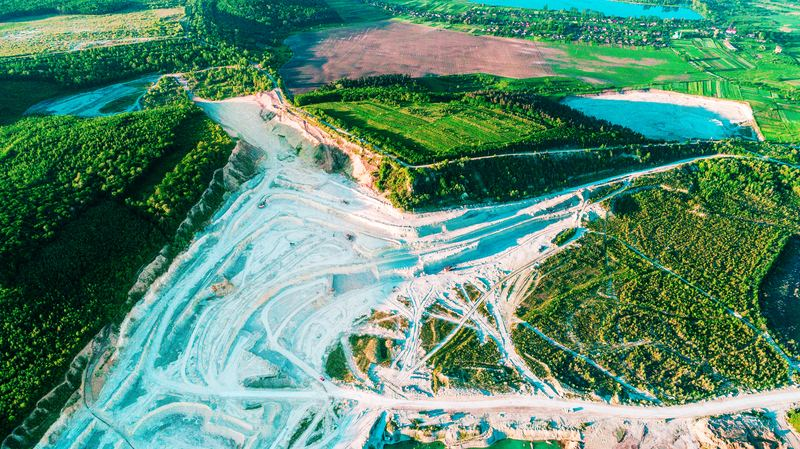

Robotics
7-DOF
Arm control with no LLM calls in the cognitive path. Posted publicly.
mYa Solutions
Everyone scaled AI up — into the cloud, away from you. We built it down: onto your own machine. Private. Local. Already proven.
You're early.
The light was always going to come around.
What has been built
Not a promise about what AI could be — a record of what one local-first system already does, across three fields that have nothing in common but the standard of proof they demand.
Seven angles of view onto one system
Robotics
Arm control with no LLM calls in the cognitive path. Posted publicly.
Medicine
Consecutive NEJM cases, correct each. ~27 sec, ~2¢ of local compute. Public.
Defense
APT-class attacks blocked, zero false positives across 1,700+ assessments.
Education
Proficiency shift in a live classroom — and 7–10 hours a week returned to the teacher.
Navigation
Live Oakland route nodes evaluated, no LLM calls. Posted publicly.
Not five achievements — five angles of view onto one architecture.
The economics
IBM Watson Health: four billion dollars over a decade, divested for one. Our clinical knowledge base: 9.8 megabytes, five dollars.
How it works
Most AI is one large model doing everything. Jean OS is the opposite: the model is one organ among many, and the intelligence lives in how the system is built.
Memory-safe, deterministic, no garbage collector. Privacy and security are properties of the foundation — not features bolted on.
The architecture is modeled on systems evolution has refined over millions of years — built for reasoning, not just retrieval.
A discipline of formulas developed in-house governs how the system reasons — named, in tribute, after Black pioneers in mathematics and science.
What we believe
Technology should give people back their time, their energy, and their lives — not demand more of them.
Your data stays on your device. Always. Not a policy that can change — a property that can't.
The race isn't about who builds the biggest model. It's about who architects intelligence correctly.
The best AI shouldn't require a data center. We build for rural schools, offline clinics, and everyone between.
Ten percent of profits past ten million dollars a year go, permanently, to the places the current AI economy has left behind — rural schools, libraries, energy access where the grid doesn't reach. It's held by a founder's golden share, structured to outlast any change in ownership. The mission can't be sold away.
The doors
The same system, pointed at the fields that need it most. Each door is its own product — built on the engine you just met.
Gives teachers back their time, and never lets student data leave the room.
Diagnostic reasoning at the point of care — private by architecture.
Intelligence for the resources the future runs on — extracted with precision, not waste.

Some problems we're just beginning to imagine. Coral restoration is where we've started.
The road
Why we exist
This company is named for Kamyia Fletcher — a teacher. The intelligence is named for Jean Williams — the founder's grandmother. Two names. Two reasons it had to be built right.
The other half
We're raising to grow, not to survive. I wasn't raised to ask for a favor before I'd earned the conversation — so let's start with what your investment builds.